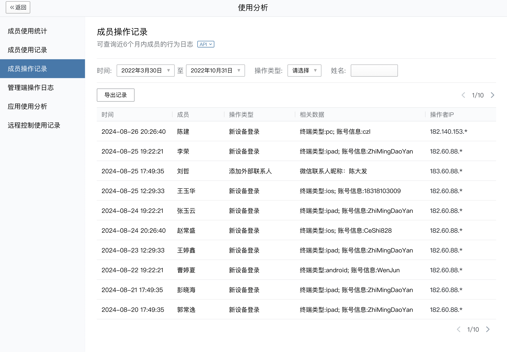

目录
成员操作记录，可以在管理端“使用分析”中查看。为了方便企业对接内部系统，设定相应规则以进行定时的安全预警，允许通过接口读取成员操作记录。

若要调此接口，需要在上图中“API”栏，配置到“可调用接口应用”列表。
因为成员操作记录数据量较大，该接口设计为增量读取接口，且有较严格的频率限制。开发者需酌情定时调用，读取合适的时间段的记录。
请求方式:POST(HTTPS)
请求地址: https://qyapi.weixin.qq.com/cgi-bin/security/member_oper_log/list?access_token=ACCESS_TOKEN
请求示例
{ "start_time": 1724256000, "end_time": 1724860799, "oper_type": 1, "userid": "sam", "cursor": "xxxxx", "limit": 2 }点击复制
参数说明:
| 参数 | 必须 | 类型 | 说明 |
|---|---|---|---|
| access_token | 是 | string | 调用接口凭证 |
| start_time | 是 | uint64 | 开始时间 取值范围：不早于180天前 |
| end_time | 是 | uint64 | 结束时间 取值范围：大于start_time，小于当前时间。开始时间和结束时间之间的跨度不能超过7天。 |
| oper_type | 否 | uint32 | 操作类型。不填表示全部 取值范围目前支持如下： 1 - 添加外部联系人 2 - 删除外部联系人 3 - 标记企业客户 4 - 新设备登录 5 - 更换手机号 6 - 绑定微信号 7 - 换绑微信号 8 - 邀请成员 9 - 封禁登录 11 - 修改昵称 12 - 修改姓名 13 - 副设备登录 15 - 确认高级功能订单 16 - 应用变更 17 - 确认会话内容存档订单 20 - 封禁互通 21 - 锁定设备 |
| userid | 否 | string | 操作者userid过滤，需要在应用可见范围内。可不填 |
| cursor | 否 | string | 分页游标。不填表示首页 |
| limit | 否 | uint32 | 最大记录数。不填默认最多获取400个记录 取值范围：1 ~ 400 注意：不保证每次返回的数据刚好为指定limit，必须用返回的 has_more 判断是否继续请求 |
接口调用频率限制为600次/分钟。
权限说明: （需具有「获取成员操作记录」权限；操作人在应用可见范围内的记录才能拿到）
返回结果:
{ "errcode": 0, "errmsg": "ok", "has_more": true, "next_cursor": "xxxxxx", "record_list": [ { "time": 1724256000, "userid": "sam", "oper_type": 1, "detail_info": "姓名：shel；手机号：15622244106", "ip": "183.40.88.*" }, { "time": 1724256400, "userid": "sam", "oper_type": 1, "detail_info": "姓名：abel；手机号：15622244108", "ip": "61.40.122.*" } ] }点击复制
参数说明:
| 参数 | 类型 | 说明 |
|---|---|---|
| errcode | int32 | 返回码 |
| errmsg | string | 错误码描述 |
| has_more | bool | 是否还有下一页 |
| next_cursor | string | 下一页的分页游标。注意，不同过滤条件的游标不能混用 |
| record_list | obj[] | 记录列表 |
| record_list.time | int64 | 操作时间 |
| record_list.userid | uint64 | 操作者userid |
| record_list.oper_type | uint32 | 操作类型 |
| record_list.detail_info | string | 相关数据 |
| record_list.ip | string | 操作者ip |